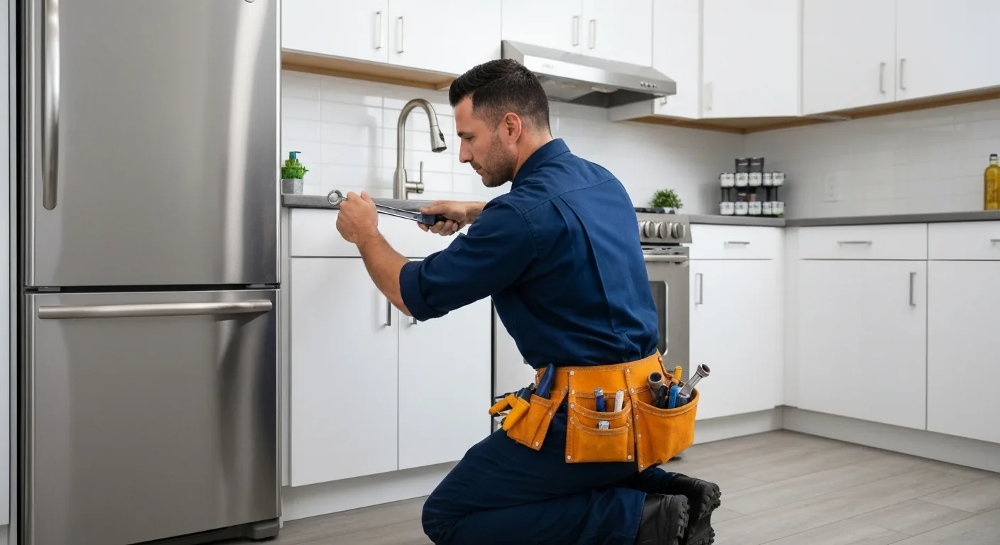
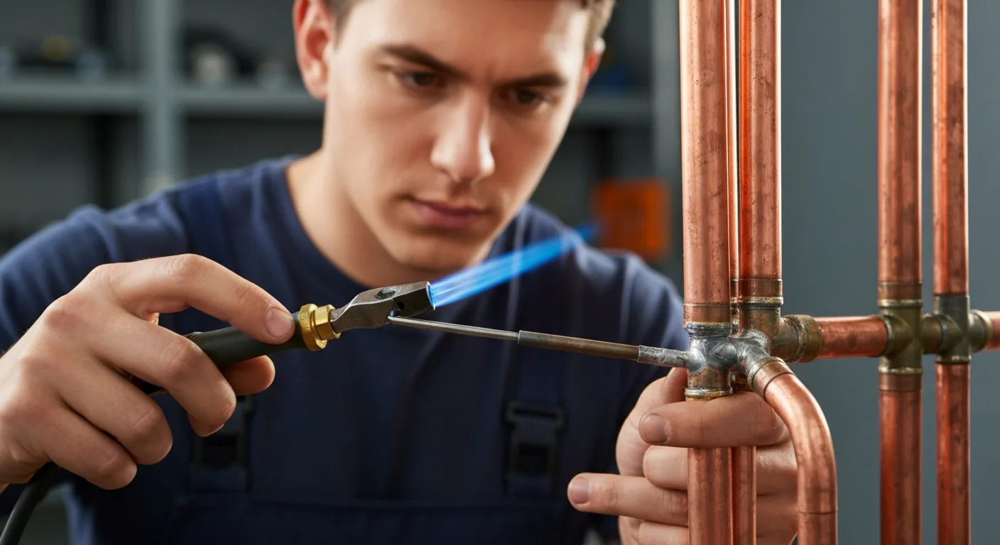
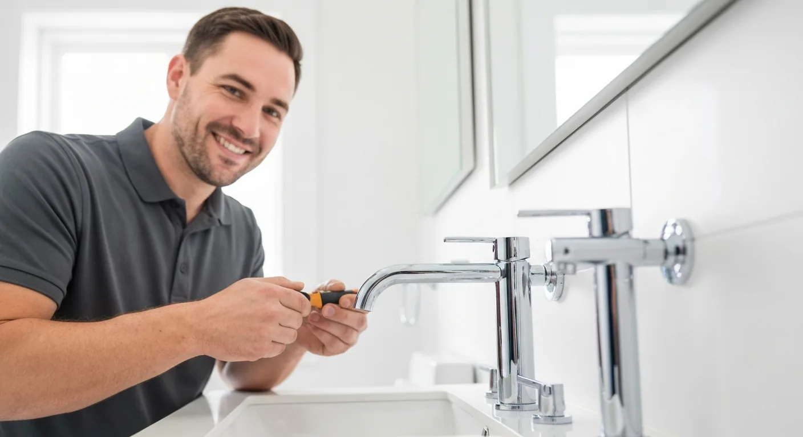
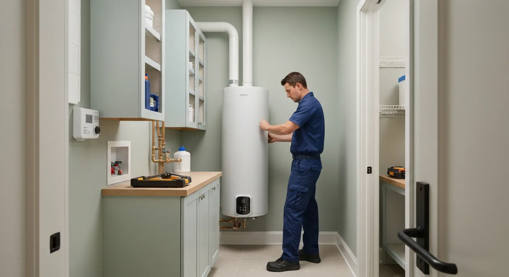
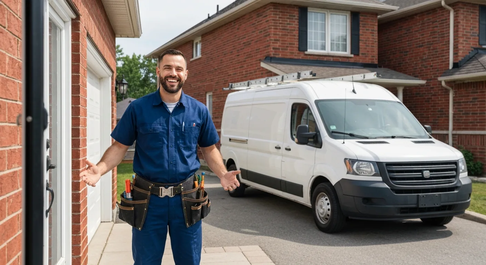

Licensed Guelph plumbers for drain cleaning, water heaters, leaks, and full plumbing installs. Free quotes.
Snaking and hydro-jetting for blocked drains — kitchen, bathroom, basement floor drains, and main line clogs.
Tank and tankless water heater installation, repair, and replacement. Fast hot water restoration when yours fails.
From dripping faucets to hidden pipe leaks — we locate, expose, and repair before water damage escalates.
Toilet installation, tub and shower rough-in, vanity supply lines — new builds and renovations.
Sink installation, dishwasher hookup, garburator removal, and kitchen drain repair.
Burst pipes, sewage backup, no hot water — 24/7 emergency plumbing response across Guelph.





Fully licensed Ontario plumbers — we pull permits when required
Burst pipes and backups don't wait — neither do we
Written quotes before any work begins — no surprise invoices
Guelph-based plumbers serving Guelph & Wellington County
Plumbing problems rarely announce themselves in advance. A slow drain becomes a blocked one. A small drip becomes a water-damaged cabinet. A failing water heater gives up on the coldest morning of the year. Having a trusted, licensed Guelph plumber's number on hand before the emergency is one of the most practical things a homeowner can do.
All plumbing work in Ontario must be performed by or under the supervision of a licensed plumber, and permits are required for new rough-ins, water heater replacements, and other prescribed work. We are fully licensed under the Ontario College of Trades and pull permits where required. This protects you: unpermitted plumbing work can void home insurance coverage and complicate home sales when inspectors flag it.
Drain cleaning is the most common call we get from Guelph homeowners. Kitchen drains clog with grease and food buildup; bathroom drains collect hair and soap scum; basement floor drains that haven't been used in years often dry out and allow sewer gas in. We use both cable snakes and hydro-jetting (high-pressure water) depending on the severity and cause of the blockage.
Water heater replacement is a common project in Guelph. Standard tank water heaters last 10–15 years; if yours is approaching that age and showing signs of rust in the water, inconsistent temperatures, or pressure relief valve leaks, replacement before failure avoids an emergency. We install both conventional 40-gallon and 60-gallon tank heaters and tankless (on-demand) units.
Guelph has areas with significant water softener use due to hard water from the municipal supply. If you have a softener, we can assess its current condition, check the brine tank, and advise on service or replacement. A properly functioning softener extends the life of your water heater, dishwasher, and faucets significantly.
We serve Guelph, Fergus, Elora, Rockwood, Cambridge, and all of Wellington County.
We provide plumber services throughout Guelph and the surrounding region:
Guelph plumbing rates typically run $120–$180 per hour plus a service call fee of $80–$120. Simple repairs like a leaking faucet or running toilet may be a flat $150–$250. Larger jobs like water heater installation ($800–$1,800 supply and install) or drain clearing ($175–$400) are quoted by the job.
Yes — the Ontario Building Code requires a permit for water heater replacement in most cases. We handle the permit application as part of the installation. Unpermitted water heater replacements can create issues with home insurance and during home sale inspections.
The most common causes are a failed heating element (electric tanks), a tripped circuit breaker, a failed thermocouple or pilot light (gas tanks), or a sediment buildup reducing efficiency. If your tank is over 12 years old and failing, replacement may be more cost-effective than repair.
Signs include unexplained increases in your Guelph Hydro or water utility bill, damp spots on ceilings or walls, the sound of running water when all fixtures are off, or a water meter that continues to turn with everything shut off. We perform leak detection and can pinpoint hidden pipe leaks.
Yes — main sewer line clogs are serious and can cause sewage to back up into your basement. We use cable snakes and hydro-jetting to clear main line blockages. We also offer drain camera inspection if recurring clogs suggest a root intrusion or pipe break.
Yes — we offer 24/7 emergency plumbing service in Guelph for burst pipes, sewage backups, loss of hot water, and other urgent issues. Weekend and after-hours calls carry a higher service rate, which we disclose before dispatch.
Contact us today for a free, no-obligation quote for plumber services in Guelph.